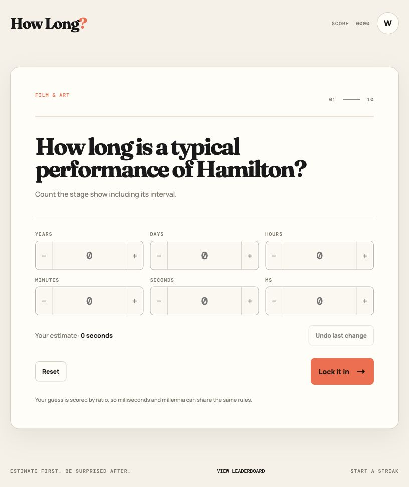

01 / Browser game
HowLong
A guessing game about time. Estimate how long real things take, from milliseconds to years.
Apps, websites, games, and a few experiments.

A guessing game about time. Estimate how long real things take, from milliseconds to years.

A directory of Elite Dangerous community tools. Find a resource by activity and keep useful links close.

A Mac app for planning tasks and remembering when to start, finish, and submit them.